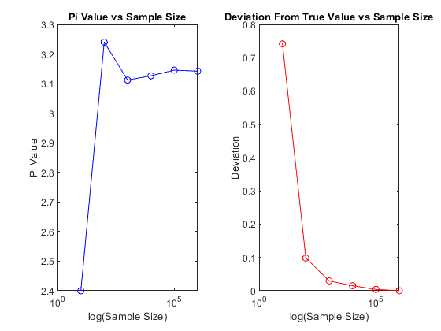

Contents
Section 1: for loop
clear;
NEXP = 6;
piVal = 0;
times = [0];
piValues = [4 4];
sampleSize = [1 2];
deviations = [0];
for exp = 1:NEXP
piTotal = 0;
numPoints = 10^exp;
numPointsInCircle = 0;
loopStart = tic;
for i = 0:numPoints
if generatePointAndCount()
proportion = numPointsInCircle/numPoints;
numPointsInCircle = numPointsInCircle + 1;
piVal = proportion * 4;
end
end
avgPiVal = 2*piTotal/numPointsInCircle;
fprintf('monte carlo pi value for %d points: %f \n', numPoints, piVal);
loopTime = toc(loopStart);
times(exp) = loopTime;
piValues(exp) = piVal;
sampleSize(exp) = numPoints;
deviations(exp) = abs(pi() - piVal);
end
summaryTable = table(transpose(sampleSize), transpose(piValues), transpose(deviations), transpose(times), 'VariableNames', ["Sample Size", "Pi Values Calculated", "Deviation From True Value", "Time for Calculation"]);
summaryTable
tiledlayout(1,2);
nexttile;
semilogx(sampleSize, piValues, 'b-o');
title('Pi Value vs Sample Size');
xlabel('log(Sample Size)');
ylabel('Pi Value');
nexttile;
semilogx(sampleSize, deviations, 'r-o');
title('Deviation From True Value vs Sample Size')
xlabel('log(Sample Size)');
ylabel('Deviation');
monte carlo pi value for 10 points: 2.400000
monte carlo pi value for 100 points: 3.240000
monte carlo pi value for 1000 points: 3.112000
monte carlo pi value for 10000 points: 3.126400
monte carlo pi value for 100000 points: 3.145680
monte carlo pi value for 1000000 points: 3.141828
summaryTable =
6×4 table
Sample Size Pi Values Calculated Deviation From True Value Time for Calculation
___________ ____________________ _________________________ ____________________
10 2.4 0.74159 0.001711
100 3.24 0.098407 0.0001355
1000 3.112 0.029593 0.0005297
10000 3.1264 0.015193 0.0041918
1e+05 3.1457 0.0040873 0.037466
1e+06 3.1418 0.00023535 0.3461

Section 2: while loop of specified precision
theta = linspace(0, 2*pi(), 256);
circleX = cos(theta)+1;
circleY = sin(theta)+1;
generatedPoints=[rand(2,1)];
pointsInCircle = [[1;1]];
pointsOutsideCircle = [[0;0]];
piValues = [4];
piVal = 0;
SIG_FIGS = 4;
for sigFigs = 1:SIG_FIGS
while ~meetsSigFigs(sigFigs, piValues)
generatedPoints = cat(2, generatedPoints, 2*rand(2,1));
[piVal, pointsInCircle, pointsOutsideCircle] = getPiValFromCoords(generatedPoints, pointsInCircle, pointsOutsideCircle);
piValues(numel(piValues)+1) = piVal;
if meetsSigFigs(sigFigs, piValues)
break;
elseif numel(generatedPoints(1,:)) > 10^8
disp('maximum tries expended')
break;
end
end
fprintf('Pi value with %d significant figure(s): %f \n', sigFigs, piVal);
fprintf('Number of points required for %d significant figure(s): %d \n', sigFigs, numel(generatedPoints(1,:)));
end
Functions
function hasFigs = meetsSigFigs(sigfigs, valueArray)
hasFigs = false;
minVal = numel(valueArray) - 30;
difference = 10^(-sigfigs+1);
if minVal <= 0
return
else
for val = (minVal+1):numel(valueArray)
if abs(valueArray(minVal) - valueArray(val)) > difference
hasFigs = false;
break;
else
hasFigs = true;
end
end
end
end
function [valueToReturn, withinCircle, outsideCircle] = getPiValFromCoords(coordArray, currentInsideCircle, currentOutsideCircle)
intCount = 0.0;
for coord = 1:numel(coordArray(1,:))
if distanceToCenter([coordArray(1,coord),coordArray(2,coord)]) <= 1
intCount = intCount + 1;
withinCircle = cat(2, currentInsideCircle, [coordArray(1,coord);coordArray(2,coord)]);
outsideCircle = currentOutsideCircle;
else
outsideCircle = cat(2, currentOutsideCircle, [coordArray(1,coord);coordArray(2,coord)]);
withinCircle = currentInsideCircle;
end
end
proportion = intCount/numel(coordArray(1,:));
valueToReturn = proportion*4;
end
function pointWithinCircle = generatePointAndCount()
point = rand(1,2,1);
if distanceToCenter(point) <= 1.0
pointWithinCircle = true;
else
pointWithinCircle = false;
end
end
function dist = distanceToCenter(point)
dist = sqrt((1-point(1))^2 + (1-point(2))^2);
end
Pi value with 1 significant figure(s): 3.225806
Number of points required for 1 significant figure(s): 31
Pi value with 2 significant figure(s): 3.179487
Number of points required for 2 significant figure(s): 78
Pi value with 3 significant figure(s): 3.130435
Number of points required for 3 significant figure(s): 345
Pi value with 4 significant figure(s): 3.158974
Number of points required for 4 significant figure(s): 3120